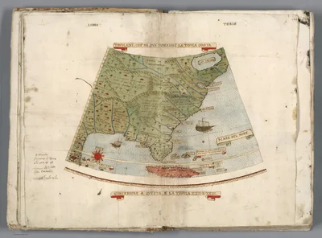

Group completion commutes with infinite products
About this chart
We show that group completion of 𝔼ₙ-monoids commutes with infinite products for n ≥ 2, by reducing the question to a more general theorem about the infinite-product-preservation of the realization functor on a suitable class of simplicial 𝔼₁-monoids. We also provide an alternative shorter argument specifically for the case of 𝔼∞-monoids, which uses the known fact that K-theory of additive ∞-categories commutes with infinite products.
The main arguments have originally been generated through the use of generative AI, and then checked and simplified by the three authors. Building on this chart, we plan to write a fully-fledged article, that streamlines these arguments, makes them more conceptual, and presents them in a more reader-friendly form.
